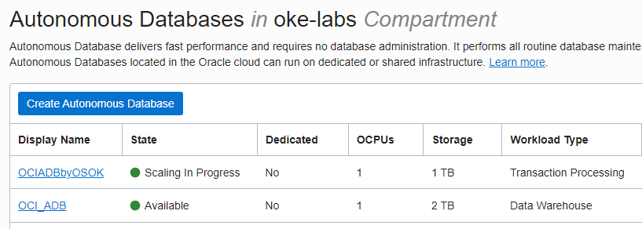

5.1 OCI Service Operator for Kubernetes(OSOK)
OCI Service Operator for Kubernetes는 OCI 자원을 Kubernetes API를 통해 관리할 수 있도록 도와주는 도구입니다. Autonomous Database 서비스를 Kubernetes API, kubectl을 통해 인스턴스를 생성, 삭제 등을 할 수 있게 해준다고 이해하면 됩니다. Kubernetes에서 사용하는 오픈소스 Operator Framework을 기반으로 작성되었습니다. 관련 참고 사이트는 아래와 같습니다.
- OCI Service Operator for Kubernetes GitHub
- OCI Service Operator for Kubernetes GitHub Documentation
- [OCI Docs Documentation] Adding OCI Service Operator for Kubernetes to Clusters
현재 v1.0.0 기준 지원하고 있는 OCI 서비스는 다음과 같습니다.
- Autonomous Database 서비스
- MySQL Database 서비스
- Streaming 서비스
OCI Service Operator for Kubernetes를 OKE Cluster에 설치
제품 설치문서를 따라 설치한 내용으로 자세한 사항은 아래 문서를 참고합니다.
Operator SDK 설치
공식 설치 문서에 따라 설치합니다.
Cloud Shell 기준 설치 명령 예시
- 아래 명령어로 설치하여 operator-sdk cli가 정상동작하는 지 확인합니다.
echo Download the release binary
export ARCH=$(case $(uname -m) in x86_64) echo -n amd64 ;; aarch64) echo -n arm64 ;; *) echo -n $(uname -m) ;; esac)
export OS=$(uname | awk '{print tolower($0)}')
export OPERATOR_SDK_DL_URL=https://github.com/operator-framework/operator-sdk/releases/download/v1.15.0
curl -LO ${OPERATOR_SDK_DL_URL}/operator-sdk_${OS}_${ARCH}
echo Verify the downloaded binary
gpg --keyserver keyserver.ubuntu.com --recv-keys 052996E2A20B5C7E
curl -LO ${OPERATOR_SDK_DL_URL}/checksums.txt
curl -LO ${OPERATOR_SDK_DL_URL}/checksums.txt.asc
gpg -u "Operator SDK (release) <cncf-operator-sdk@cncf.io>" --verify checksums.txt.asc
grep operator-sdk_${OS}_${ARCH} checksums.txt | sha256sum -c
echo Install the release binary in your PATH
chmod +x operator-sdk_${OS}_${ARCH} && mv operator-sdk_${OS}_${ARCH} ~/.local/bin/operator-sdk
operator-sdk version
Operator Lifecycle Manager (OLM) 설치
아래 명령으로 현재 OKE 클러스터에 OLM 자원을 설치 및 확인합니다.
operator-sdk olm install
operator-sdk olm status
OCI Service Operator for Kubernetes 설치
Instance Principal
OKE Worker Node에 대한 Dynamic Group 만들기
- OCI 콘솔에 로그인 하여 Identity & Security > Identity > Compartments로 이동하여 OKE 클러스터가 있는 Compartment의 OCID를 복사합니다.
- 좌측 Dynamic Group 메뉴로 이동하여 복사한 OCID로 아래 규칙을 가진 Dynamic Group을 만듭니다.
- Name: 예,
oke-labs-dynamic-group - Rule:
instance.compartment.id = '<compartment-ocid>'
- Name: 예,
Dynamic Group을 위한 Policy 만들기
-
좌측 Policies 메뉴로 이동하여 만든 Dynamic Group에 아래와 같이 권한을 부여합니다.
Allow dynamic-group <DYNAMICGROUP_NAME> to manage <OCI_SERVICE_1> in compartment <COMPARTMENT_NAME> ... -
예시
-
Policy Name:
oke-labs-osok-policy -
COMPARTMENT_NAME:
oke-labs -
DYNAMICGROUP_NAME:
oke-labs-dynamic-group -
Autonomous Database Service
Allow dynamic-group oke-labs-dynamic-group to manage autonomous-database-family in compartment oke-labs -
MySQL DB System Service
Allow dynamic-group oke-labs-dynamic-group to manage mysql-family in compartment oke-labs Allow dynamic-group oke-labs-dynamic-group to {SUBNET_READ, SUBNET_ATTACH, SUBNET_DETACH, VCN_READ, COMPARTMENT_INSPECT} in compartment oke-labs Allow dynamic-group oke-labs-dynamic-group to use tag-namespaces in compartment oke-labs
-
Enable User Principal
-
OSOK가 배포될 namespace를 만듭니다.
kubectl create ns oci-service-operator-system kubectl label ns oci-service-operator-system control-plane=controller-manager -
OCI Service Operator for Kubernetes가 OCI 서비스 및 자원을 생성, 관리할 사용자 정보에 대한 Kubernetes secret으로 만듭니다.
-
tenancy: 사용할 Tenancy OCID
-
user: 사용자의 OCID
-
privatekey: API_KEY로 등록한 Private Key 경로
-
fingerprint: API_KEY로 등록한 Public Key의 fingerprint
-
passphrase: Private Key 생성시 입력한 passphrase, 없으면 빈값
-
region: OKE 클러스터가 있는 region id, 예, ap-seoul-01
kubectl -n oci-service-operator-system create secret generic ocicredentials \ --from-literal=tenancy=<CUSTOMER_TENANCY_OCID> \ --from-literal=user=<USER_OCID> \ --from-literal=fingerprint=<USER_PUBLIC_API_KEY_FINGERPRINT> \ --from-literal=region=<USER_OCI_REGION> \ --from-literal=passphrase=<PASSPHRASE_STRING> \ --from-file=privatekey=<PATH_OF_USER_PRIVATE_API_KEY> -
예시
kubectl -n oci-service-operator-system create secret generic ocicredentials \ --from-literal=tenancy=ocid1.tenancy.oc1..aaaaaaaam~~~~~~~~~~~~~~~~~~ \ --from-literal=user=ocid1.user.oc1..aaaaaaaaz~~~~~~~~~~~~~~~~~~ \ --from-literal=fingerprint=a0:e1:fe:79:22:22:f0:b5:6b:29:72:5f:5d:~~:~~:~~ \ --from-literal=region=ap-seoul-01 \ --from-literal=passphrase= \ --from-file=privatekey=/home/oke_admin/.oci/oci_api_key.pem
-
OCI Service Operator for Kubernetes(OSOK) 배포
-
OSOK Operator 설치
docker pull iad.ocir.io/oracle/oci-service-operator-bundle:1.0.0 operator-sdk run bundle iad.ocir.io/oracle/oci-service-operator-bundle:1.0.0 -
OSOK 설치후 OCI 서비스를 위한 CustomResource가 추가된 것을 알 수 있습니다.
oke_admin@cloudshell:~ (ap-seoul-1)$ kubectl api-resources --api-group=oci.oracle.com NAME SHORTNAMES APIVERSION NAMESPACED KIND autonomousdatabases oci.oracle.com/v1beta1 true AutonomousDatabases mysqldbsystems oci.oracle.com/v1beta1 true MySqlDbSystem streams oci.oracle.com/v1beta1 true Stream
OSOK로 Autonomous Database Service 관리하기
참고 문서
ADB(Autonomous Database) Binding
OCI 콘솔에서 만든 ADB 인스턴스를 Kubernetes의 자원으로 Binding하는 경우입니다.
-
OCI 콘솔에 로그인하여 바인딩할 Autonomous Database의 인스턴스를 생성합니다.
-
Binding을 위해 필요한 명세 yaml을 확인하여 작성합니다.
- spec.id: 기 존재하는, 바인딩할 ADB의 OCID를 입력
- walletName: 바인딩후에 wallet이 저장될 kubernetes secret의 이름 입력
- walletPassword.secret.secretName: wallet에 사용할 암호가 저장된 secret 이름, 바인딩 전에 미리 secret을 생성합니다.
apiVersion: oci.oracle.com/v1beta1 kind: AutonomousDatabases metadata: name: <CR_OBJECT_NAME> spec: id: <AUTONOMOUS_DATABASE_OCID> wallet: walletName: <WALLET_SECRET_NAME> walletPassword: secret: secretName: <WALLET_PASSWORD_SECRET_NAME> -
실행 예시
-
walletPassword 생성
kubectl create secret generic ociadb-wallet-password-secret --from-literal=walletPassword='xxxxxxxxxxxx' -
실행
cat <<EOF > autonomousdatabases-bind.yaml apiVersion: oci.oracle.com/v1beta1 kind: AutonomousDatabases metadata: name: ociadb spec: id: ocid1.autonomousdatabase.oc1.ap-seoul-1.anuwgljrwtbe3zaahewyo25rujjz36bwsihfedmk3sxejchlq64krjylnhga wallet: walletName: ociadb-wallet-secret walletPassword: secret: secretName: ociadb-wallet-password-secret EOF kubectl apply -f autonomousdatabases-bind.yaml
-
-
결과 확인
kubectl describe 명령을 통해 에러없이 바인딩이 성공했는지 확인합니다.
oke_admin@cloudshell:~ (ap-seoul-1)$ kubectl get autonomousdatabases NAME DBWORKLOAD STATUS AGE ociadb Active 7m20s oke_admin@cloudshell:~ (ap-seoul-1)$ kubectl describe autonomousdatabases ociadb Name: ociadb ... Kind: AutonomousDatabases ... Status: Status: Conditions: Last Transition Time: 2021-12-22T09:29:25Z Message: AutonomousDatabase Bound success ... Events: Type Reason Age From Message ---- ------ ---- ---- ------- Normal Success 7m54s AutonomousDatabases Finalizer is added to the object Normal Success 7m52s (x2 over 7m53s) AutonomousDatabases Create or Update of resource succeeded -
wallet 확인
바인딩 결과 ociadb-wallet-secret secret이 생성되며, 내용을 보면 wallet 상에 있는 파일들이 Base64로 인코딩된 형태로 있는 것을 확인할 수 있습니다. 애플리케이션 컨테이너에서 secret을 마운트하여 ADB 연결시 사용하면 됩니다.
oke_admin@cloudshell:~ (ap-seoul-1)$ kubectl get secret NAME TYPE DATA AGE ... ociadb-wallet-password-secret Opaque 1 9m40s ociadb-wallet-secret Opaque 8 9m32s oke_admin@cloudshell:~ (ap-seoul-1)$ kubectl get secret ociadb-wallet-secret -o yaml apiVersion: v1 data: README: V2FsbGV0IE... cwallet.sso: ofhONgAAAA... ewallet.p12: MIIZ/AIBAz... keystore.jks: /u3+7QAAA... ojdbc.properties: IyBDb2... sqlnet.ora: V0FMTE... tnsnames.ora: b2NpYWR... truststore.jks: /u3+7QAAAA... kind: Secret metadata: ... name: ociadb-wallet-secret ... type: Opaque
ADB(Autonomous Database) Provisioning
-
Provisionig을 위해 필요한 명세 yaml을 확인하여 작성합니다.
- spec.compartmentId: 생성될 ADB가 위치할 Compartment의 OCID를 입력
- walletName: 바인딩후에 wallet이 저장될 kubernetes secret의 이름 입력
- walletPassword.secret.secretName: wallet에 사용할 암호가 저장된 secret 이름, 바인딩 전에 미리 secret을 생성합니다.
- 나머지 항목은 OCI 콘솔에서 ADB 생성시 입력하는 것과 동일하게 원하는 값 입력 - 항목 명세 참조
apiVersion: oci.oracle.com/v1beta1 kind: AutonomousDatabases metadata: name: <CR_OBJECT_NAME> spec: compartmentId: <COMPARTMENT_OCID> displayName: <DISPLAY_NAME> dbName: <DB_NAME> dbWorkload: <OLTP/DW> isDedicated: <false/true> dbVersion: <ORABLE_DB_VERSION> dataStorageSizeInTBs: <SIZE_IN_TBs> cpuCoreCount: <COUNT> adminPassword: secret: secretName: <ADMIN_PASSWORD_SECRET_NAME> isAutoScalingEnabled: <true/false> isFreeTier: <false/true> licenseModel: <BRING_YOUR_OWN_LICENSE/LICENSE_INCLUDEE> wallet: walletName: <WALLET_SECRET_NAME> walletPassword: secret: secretName: <WALLET_PASSWORD_SECRET_NAME> freeformTags: <KEY1>: <VALUE1> definedTags: <TAGNAMESPACE1>: <KEY1>: <VALUE1> -
실행 예시
-
adminPassword, walletPassword 생성
kubectl create secret generic ociadb-by-osok-admin-password-secret --from-literal=password='xxxxxxxxxxxx' kubectl create secret generic ociadb-by-osok-wallet-password-secret --from-literal=walletPassword='xxxxxxxxxxxx' -
실행
cat <<EOF > autonomousdatabases-provision.yaml apiVersion: oci.oracle.com/v1beta1 kind: AutonomousDatabases metadata: name: ociadbbyosok spec: compartmentId: ocid1.compartment.oc1..aaaaaaaaa2jcbfqjyz24y4hbbqurdxjegmsp6eqhzq4r2gni5bocoh2axb4a displayName: OCIADBbyOSOK dbName: ociadbbyosok dbWorkload: OLTP isDedicated: false dbVersion: 19c dataStorageSizeInTBs: 1 cpuCoreCount: 1 adminPassword: secret: secretName: ociadb-by-osok-admin-password-secret isAutoScalingEnabled: false isFreeTier: false licenseModel: LICENSE_INCLUDED wallet: walletName: ociadb-by-osok-wallet-secret walletPassword: secret: secretName: ociadb-by-osok-wallet-password-secret EOF kubectl apply -f autonomousdatabases-provision.yaml
-
-
결과 확인
kubectl describe 명령을 통해 에러없이 바인딩이 성공했는지 확인합니다.
oke_admin@cloudshell:~ (ap-seoul-1)$ kubectl get autonomousdatabases NAME DBWORKLOAD STATUS AGE ociadbbyosok OLTP Active 5m30s oke_admin@cloudshell:~ (ap-seoul-1)$ kubectl describe autonomousdatabases ociadbbyosok Name: ociadbbyosok ... Kind: AutonomousDatabases ... Status: Status: Conditions: Last Transition Time: 2021-12-23T02:54:54Z Message: AutonomousDatabase Provisioning Status: True ... Events: Type Reason Age From Message ---- ------ ---- ---- ------- Normal Success 6m14s AutonomousDatabases Finalizer is added to the object Normal Success 5m5s (x2 over 5m6s) AutonomousDatabases Create or Update of resource succeeded -
wallet 확인
바인딩 결과 ociadb-wallet-secret secret이 생성되며, 내용을 보면 wallet 상에 있는 파일들이 Base64로 인코딩된 형태로 있는 것을 확인할 수 있습니다. 애플리케이션 컨테이너에서 secret을 마운트하여 ADB 연결시 사용하면 됩니다.
oke_admin@cloudshell:~ (ap-seoul-1)$ kubectl get secret NAME TYPE DATA AGE ... ociadb-by-osok-admin-password-secret Opaque 1 23m ociadb-by-osok-wallet-password-secret Opaque 1 23m ociadb-by-osok-wallet-secret Opaque 8 20m oke_admin@cloudshell:~ (ap-seoul-1)$ kubectl get secret ociadb-by-osok-wallet-secret -o yaml apiVersion: v1 data: README: V2FsbGV0IE... cwallet.sso: ofhONgAAAA... ewallet.p12: MIIZ/AIBAz... keystore.jks: /u3+7QAAA... ojdbc.properties: IyBDb2... sqlnet.ora: V0FMTE... tnsnames.ora: b2NpYWR... truststore.jks: /u3+7QAAAA... kind: Secret metadata: ... name: ociadb-by-osok-wallet-secret ... type: Opaque
ADB(Autonomous Database) Update
OCI API에서 제공하는 Autonomous Database에 대한 Update 지원 항목내에서 OSOK GitHub 문서의 예시를 참고합니다.
-
Oracle Cloud Infrastructure API Reference and Endpoints / UpdateAutonomousDatabaseDetails Reference
-
GitHub 문서 기준
apiVersion: oci.oracle.com/v1beta1 kind: AutonomousDatabases metadata: name: <CR_OBJECT_NAME> spec: id: <AUTONOMOUS_DATABASE_OCID> displayName: <DISPLAY_NAME> dbName: <DB_NAME> dbWorkload: <OLTP/DW> isDedicated: <false/true> dbVersion: <ORABLE_DB_VERSION> dataStorageSizeInTBs: <SIZE_IN_TBs> cpuCoreCount: <COUNT> adminPassword: secret: secretName: <ADMIN_PASSWORD_SECRET_NAME> isAutoScalingEnabled: <true/false> isFreeTier: <false/true> licenseModel: <BRING_YOUR_OWN_LICENSE/LICENSE_INCLUDEE> wallet: walletName: <WALLET_SECRET_NAME> walletPassword: secret: secretName: <WALLET_PASSWORD_SECRET_NAME> freeformTags: <KEY1>: <VALUE1> definedTags: <TAGNAMESPACE1>: <KEY1>: <VALUE1>
Binding 한 경우
기존 YAML 또는 배포된 YAML에 업데이트 항목을 추가 하여 반영합니다.
-
스토리지 증가 예시
앞선 autonomousdatabases-bind.yaml 파일에 dataStorageSizeInTBs 항목을 추가하여 배포합니다.
apiVersion: oci.oracle.com/v1beta1 kind: AutonomousDatabases metadata: name: ociadb spec: id: ocid1.autonomousdatabase.oc1.ap-seoul-1.anuwgljrwtbe3zaahewyo25rujjz36bwsihfedmk3sxejchlq64krjylnhga wallet: walletName: ociadb-wallet-secret walletPassword: secret: secretName: ociadb-wallet-password-secret dataStorageSizeInTBs: 2
Provisioning 한 경우
-
스토리지 증가 예시
앞선 autonomousdatabases-provision.yaml 파일에 생성된 ADB의 OCID를 spec.id에 추가합니다. 그리고 dataStorageSizeInTBs 값을 변경합니다.
apiVersion: oci.oracle.com/v1beta1 kind: AutonomousDatabases metadata: name: ociadbbyosok spec: id: ocid1.autonomousdatabase.oc1.ap-seoul-1.anuwgljrwtbe3zaaz6ydcc2epj236mgguz4kuc3udjontb5hetrwr4545x5a compartmentId: ocid1.compartment.oc1..aaaaaaaaa2jcbfqjyz24y4hbbqurdxjegmsp6eqhzq4r2gni5bocoh2axb4a displayName: OCIADBbyOSOK dbName: ociadbbyosok dbWorkload: OLTP isDedicated: false dbVersion: 19c dataStorageSizeInTBs: 2 cpuCoreCount: 1 adminPassword: secret: secretName: ociadb-by-osok-admin-password-secret isAutoScalingEnabled: false isFreeTier: false licenseModel: LICENSE_INCLUDED wallet: walletName: ociadb-by-osok-wallet-secret walletPassword: secret: secretName: ociadb-by-osok-wallet-password-secret -
업데이트 실행결과

oke_admin@cloudshell:autonomousdatabases (ap-seoul-1)$ kubectl describe autonomousdatabases ociadbbyosok Name: ociadbbyosok ... Status: Status: Conditions: Last Transition Time: 2021-12-23T04:23:49Z Message: AutonomousDatabase Provisioning Status: True Type: Provisioning Last Transition Time: 2021-12-23T04:24:54Z Message: AutonomousDatabase OCIADBbyOSOK is Active Status: True Type: Active Last Transition Time: 2021-12-23T05:25:53Z Message: AutonomousDatabase Update success Status: True Type: Active Ocid: ocid1.autonomousdatabase.oc1.ap-seoul-1.anuwgljrwtbe3zaaz6ydcc2epj236mgguz4kuc3udjontb5hetrwr4545x5a ...
ADB(Autonomous Database) Delete
현재 버전 기준으로 Delete 기능을 따로 제공하지 않아, OKE 클러스터에서 autonomousdatabases 자원을 kubectl delete 명령으로 삭제해도 실제 ADB 인스턴스가 OCI에서 삭제되지는 않습니다.
** 이 글은 개인으로서, 개인의 시간을 할애하여 작성된 글입니다. 글의 내용에 오류가 있을 수 있으며, 글 속의 의견은 개인적인 의견입니다. **